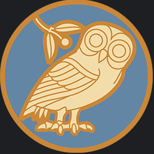

The Zeitgeist is the startup which aims to create EduTech solutions for cognitive training and enhancing mental processes and body language performance,
providing guided education improvement, and cognitive ease by making targeted and
personalized learning outcomes which could be applied universally and making strong and capable humans, scholars and learners.
Mission
The company's mission is to create an application system to improve cognitive processes, listening, language skills,
connect these processes with universal activities and connect them with creative and personalized incentive options.
Communication, listening skills, vocabulary and erudition have tremendously important role in modern life.
For most people these skills are learned by exposure to the selected environment, reading, watching and mimesis.
They are unconsciously adopted and applied later in life.
Modern professional environments converge to the point where single high-quality threads of thought are immediately executed into action.
The Zeitgeist company commits itself to creating a technological system which could change the education and training for humans to create a better version of themselves.
Product line - Mneme

Mneme product is a proof of concept project which aims to mimic the communication process and help people develop and improve their
communication process by practising memory. Analytics and data science behavioural tracking allow the user to analyse their performance, memory and their body language while exercising.
One part of the technology is founded on the latest natural language processing research which is founded on the usage of large language models for generating text, voice cloning, text recognition and creation of realistic dialogues with the internal AI.
Another part of the technology is focused on computer vision body posture detection, motion tracking and facial expression in order to score or recommend improvements in
body language performance. The system uses various incentivization methods in order to enhance the coaching experience, hook the student to the process and commit him to the lifestyle and process
of continuous learning and development.
Tech-stack
Company primarily creates the mobile applications with the desire to gradually expand it's technological ecosystem to the web and diversify its technological portfolio.
Android and iOS mobile systems for developing infrastructure